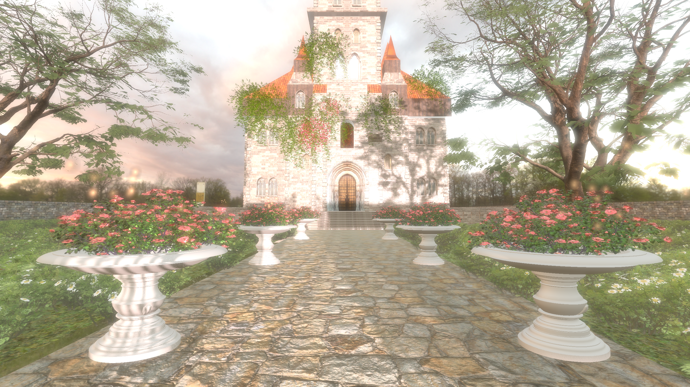
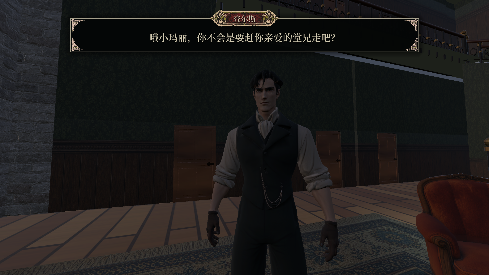
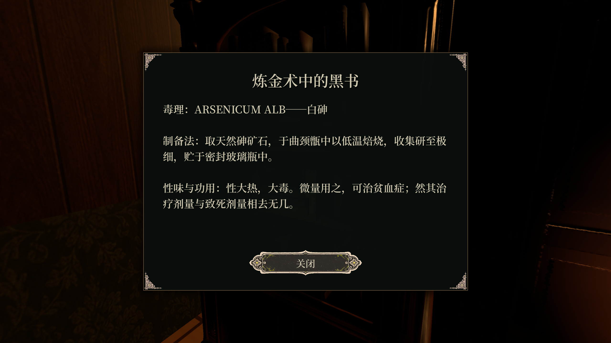
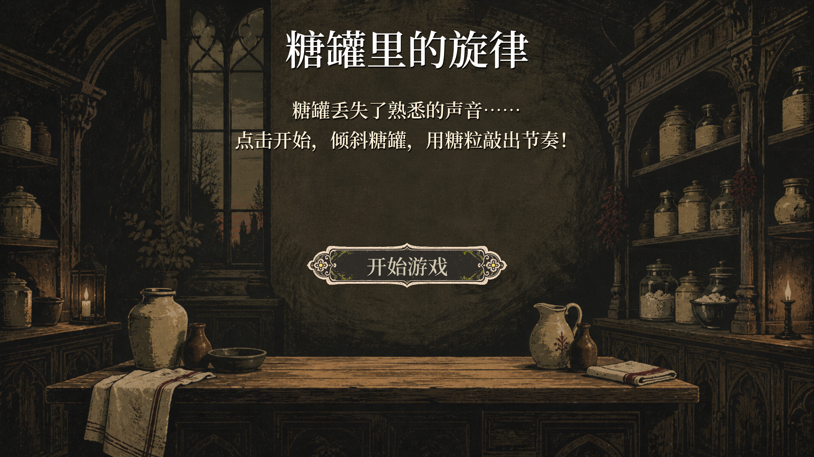
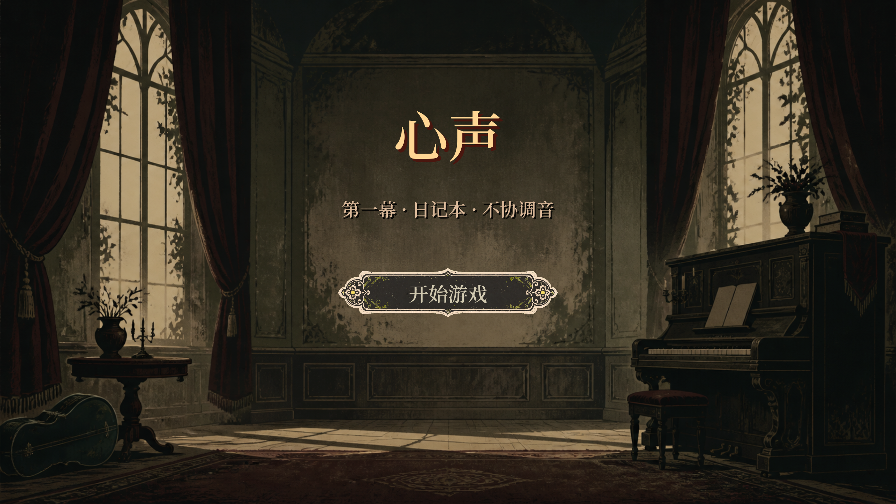
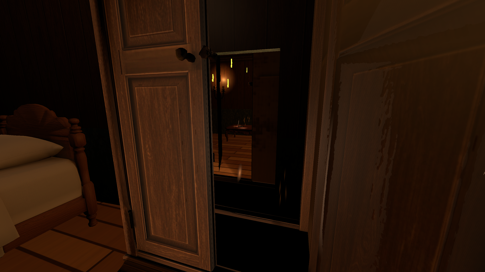
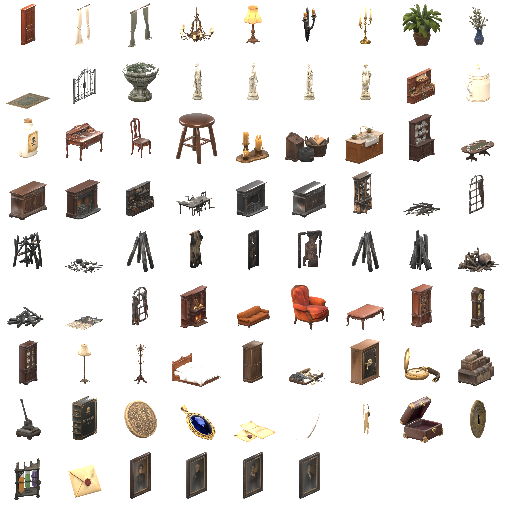
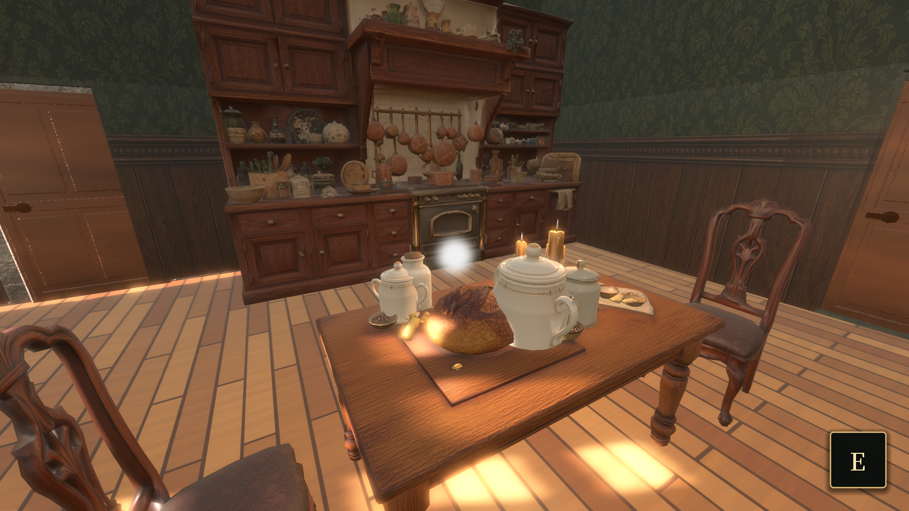
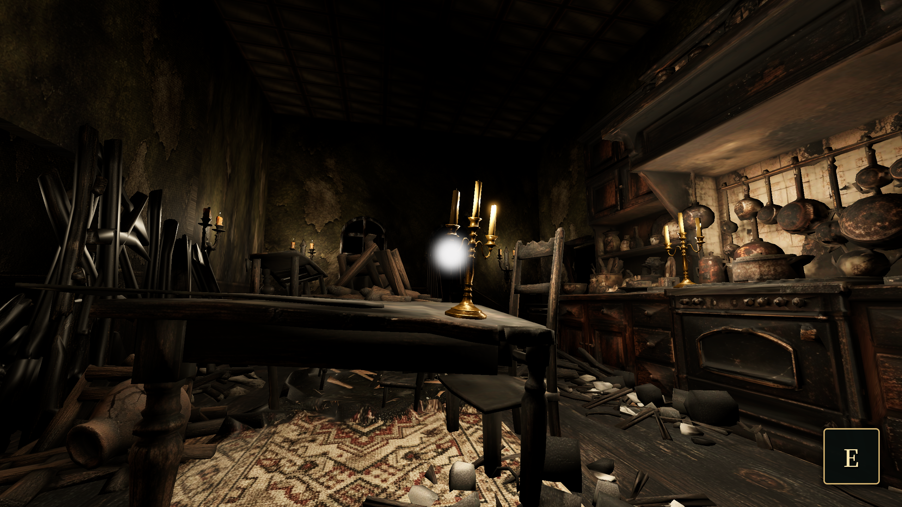
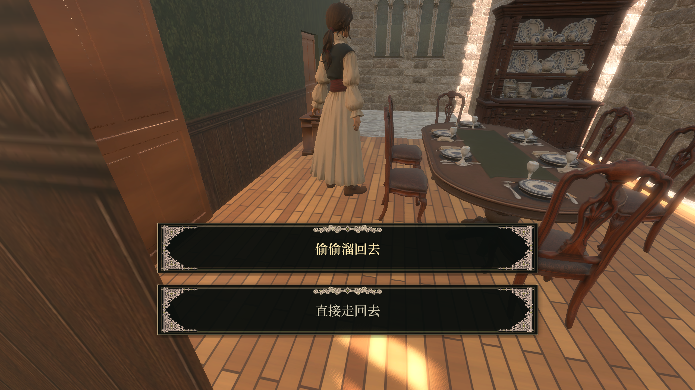

Approach
Spatial triggers detect a player or an interactable object.
Castle narrative prototype
A short first-person game where rooms, clue objects, dialogue, and choices gradually expose a family story.
The story prototype draws on Shirley Jackson’s novel We Have Always Lived in the Castle, retaining its uneasy domestic atmosphere and questions surrounding the family’s past.
The team distributed the family’s history across rooms and clue objects for players to discover. Reading, collecting, dialogue, and choices reveal the story and give players reasons to revisit rooms with new information.



Spatial triggers detect a player or an interactable object.
Story controllers call dialogue, reading, pickup, choice, or minigame events.
UI states pause, reveal, or redirect the player's next action.
Session and world state record clues, choices, and level progress.
Approaching a character triggers dialogue, with the dialogue manager loading the relevant content.
Books, notes, and clue objects open dedicated reading states without leaving the scene.
Selected answers are recorded as story state for subsequent events to reference.
Collectable items connect object interaction with persistent session data.
Players complete short interactive tasks during exploration to advance local story events.
Menu, loading, pause, and confirmation interfaces support transitions between gameplay states.
Short minigames connect story events, while hidden routes within the castle invite further exploration.
This minigame draws on the novel’s sugar-bowl poisoning: Merricat puts arsenic in the sugar, killing several family members, and her sister Constance is acquitted after standing trial. The game omits Uncle Julian to simplify the narrative and adapts the sugar-bowl episode into a music-and-rhythm interaction that connects and advances story events.

The second minigame uses song within the sisters’ relationship as the basis for a shared-frequency task. It is the team’s interactive adaptation of that relationship.
In the novel, village children taunt Merricat with a rhyme about the poisoning, associating song with hostility toward the sisters. The game uses the shared-frequency task to express a connection between them and advance the story through sound.

A passage is concealed within the castle’s domestic spaces. Players need to explore carefully, find its entrance, and pass through to continue. Finding the route is part of progressing through the story.

Objects and clues found in the rooms gradually reveal the family’s past.
The interaction interface and its visual states preserve the dark printed aesthetic while making very different actions, such as reading a clue and choosing a response, immediately distinguishable.
The main-use library contains 60 GLB files. Their retained metadata identifies 57 as Tripo/VAST AIGC outputs and three as Blender exports. Production involved generating objects, then selecting, naming, cleaning, combining, and placing them in scenes.
Create candidate props and furniture with Tripo3D.
Sort assets by room, clue function, and production priority.
Clean and combine selected objects through Blender exports.
Import, light, collide, and connect assets to Godot interactions.



The Godot report proposes modular levels, reusable interaction templates, signals, clue systems, and a kitchen-first production sequence.
The project includes scripts for session and world state, story controllers, dialogue, doors, pickups, readable objects, choices, video triggers, and minigame interactions.
